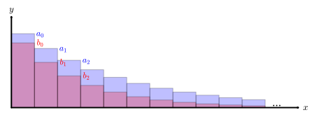
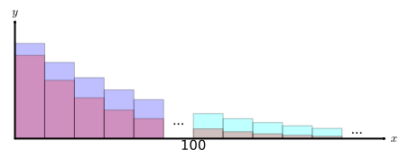

Let \(\{a_n\}_{n=1}^\infty\) be a sequence, with infinite series \(\ds \sum_{n=1}^\infty a_n=a_1+a_2+\cdots \text{.}\) Suppose \(\{b_n\}_{n=1}^\infty\) is a sequence where each \(b_n=3a_n\text{,}\) with infinite series \(\ds \sum_{n=1}^\infty b_n=\sum_{n=1}^\infty 3a_n=3a_1+3a_2+\cdots \text{.}\)
(a)
If \(\ds \sum_{n=1}^\infty a_n=5\) what can be said about \(\ds\sum_{n=1}^\infty b_n\text{?}\)
\(\ds\sum_{n=1}^\infty b_n\) converges but the value cannot be determined.
\(\ds\sum_{n=1}^\infty b_n\) converges to \(3\cdot 5=15\text{.}\)
\(\ds\sum_{n=1}^\infty b_n\) converges to some value other than 15.
\(\ds\sum_{n=1}^\infty b_n\) diverges.
It cannot be determined whether \(\ds\sum_{n=1}^\infty b_n\) converges or diverges.
(b)
If \(\ds \sum_{n=1}^\infty a_n\) diverges, what can be said about \(\ds\sum_{n=1}^\infty b_n\text{?}\)
\(\ds\sum_{n=1}^\infty b_n\) converges but the value cannot be determined.
\(\ds\sum_{n=1}^\infty b_n\) converges and the value can be determined.
\(\ds\sum_{n=1}^\infty b_n\) diverges.
It cannot be determined whether \(\ds\sum_{n=1}^\infty b_n\) converges or diverges.
What is true about \(\ds \lim_{n\to\infty} \frac{b_n}{a_n}\) and \(\ds \lim_{n\to\infty} \frac{a_n}{b_n}\text{?}\)
Their values are reciprocals.
Their values negative reciprocals.
They are both positive finite constants.
Only one value is a finite positive constant.
One value is \(0\) and the other value is infinite.
(e)
Does the series \(\ds \sum_{n=2}^\infty \frac{1}{\sqrt{n}}\) converge or diverge?
(f)
Using your chosen sequence and the Limit Comparison Test, does \(\ds \sum_{n=2}^\infty \frac{2}{\sqrt{n+3}}\) converge or diverge?
Activity8.4.7.
We wish to determine if \(\ds \sum_{n=1}^\infty \frac{3}{n^2+8n+5}\) converges or diverges.
(a)
To which of the following should we compare \(\ds \{x_n\}=\left\{\frac{3}{n^2+8n+5} \right\}\text{?}\)
\(\ds \left\{\frac{1}{n}\right\}\text{.}\)
\(\ds \left\{\frac{1}{\sqrt{n}}\right\}\text{.}\)
\(\ds \left\{\frac{1}{n^2}\right\}\text{.}\)
\(\ds \left\{\frac{1}{2^n}\right\}\text{.}\)
(b)
Using your chosen sequence and the Limit Comparison Test, does \(\ds \frac{3}{n^2+8n+5}\) converge or diverge?
Activity8.4.8.
Use the Limit Comparison Test to determine if the series \(\ds \sum_{n=5}^\infty \frac{2}{4^n}\) converges or diverges.
Activity8.4.9.
Consider sequences \(\{a_n\}, \{b_n\}\) where \(a_n\geq b_n\geq 0\text{.}\)

Plots of sequences \(\{a_n\}, \{b_n\}\) where \(a_n\geq b_n\geq 0\text{.}\)
Figure8.4.2.Plots of \(\{a_n\}, \{b_n\}\)
(a)
Suppose that \(\ds \sum_{n=0}^\infty a_n\) converges. What could be said about \(\{b_n\}\text{?}\)
\(\ds \sum_{n=0}^\infty b_n\) converges.
\(\ds \sum_{n=0}^\infty b_n\) diverges.
Whether or not \(\ds \sum_{n=0}^\infty b_n\) converges or diverges cannot be determined with this information.
(b)
Suppose that \(\ds \sum_{n=1}^\infty a_n=\sum_{n=1}^\infty \frac{1}{n+1}\) which diverges. Which of the following statements are true?
\(\ds 0\leq \frac{1}{2n^2} \leq \frac{1}{n+1}\) for each \(n \geq 1\) and \(\ds \sum_{n=1}^\infty \frac{1}{2n^2}\) is a convergent \(p\)-series where \(p=2\text{.}\)
\(\ds 0\leq \frac{1}{2n}\leq \frac{1}{n+1}\) for each \(n \geq 1\) and \(\ds \sum_{n=1}^\infty \frac{1}{2n}\) is a divergent \(p\)-series where \(p=1\text{.}\)
(c)
Suppose that \(\ds \sum_{n=0}^\infty a_n\) was some series that diverges. What could be said about \(\{b_n\}\text{?}\)
\(\ds \sum_{n=0}^\infty b_n\) converges.
\(\ds \sum_{n=0}^\infty b_n\) diverges.
Whether or not \(\ds \sum_{n=0}^\infty b_n\) converges or diverges cannot be determined with this information.
(d)
Suppose that \(\ds \sum_{n=0}^\infty b_n\) diverges. What could be said about \(\{a_n\}\text{?}\)
\(\ds \sum_{n=0}^\infty a_n\) converges.
\(\ds \sum_{n=0}^\infty a_n\) diverges.
Whether or not \(\ds \sum_{n=0}^\infty a_n\) converges or diverges cannot be determined with this information.
(e)
Suppose that \(\ds \sum_{n=0}^\infty b_n=\sum_{n=0}^\infty \frac{1}{3^n}\) which converges. Which of the following statements are true?
\(\ds 0\leq \frac{1}{3^n} \leq \frac{1}{2^n}\) for each \(n\) and \(\ds \sum_{n=0}^\infty \frac{1}{2^n}\) is a convergent geometric series where \(\ds |r|=\frac{1}{2} \lt 1\text{.}\)
\(\ds 0\leq \frac{1}{3^n} \leq 1\) for each \(n\) and \(\ds \sum_{n=0}^\infty 1\) diverges by the Divergence Test.
(f)
Suppose that \(\ds \sum_{n=0}^\infty b_n\) was some series that converges. What could be said about \(\{a_n\}\text{?}\)
\(\ds \sum_{n=0}^\infty a_n\) converges.
\(\ds \sum_{n=0}^\infty a_n\) diverges.
Whether or not \(\ds \sum_{n=0}^\infty a_n\) converges or diverges cannot be determined with this information.
Fact8.4.3.
Suppose we have sequences \(\{a_n\}, \{b_n\}\) so that for some \(k\) we have that \(0\leq b_n\leq a_n\) for each \(k\geq n\text{.}\) Then we have the following results:
If \(\ds\sum_{k=n}^\infty a_n\) converges, then so does \(\ds\sum_{k=n}^\infty b_n\text{.}\)
If \(\ds\sum_{k=n}^\infty b_n\) diverges, then so does \(\ds\sum_{k=n}^\infty a_n\text{.}\)
Activity8.4.10.
Suppose that you were handed positive sequences \(\{a_n\}, \{b_n\}\text{.}\) For the first few values \(a_n\geq b_n\text{,}\) but after that what happens is unclear until \(n=100\text{.}\) Then for any \(n\geq 100\) we have that \(a_n \leq b_n\text{.}\)

Plots of sequences \(\{a_n\}, \{b_n\}\) where \(a_n\geq b_n\geq 0\) initially but eventually \(a_n\leq b_n\geq 0\text{.}\)
Figure8.4.4.Plots of \(\{a_n\}, \{b_n\}\)
(a)
How might we best utilize Fact 8.4.3 to determine the convergence of \(\ds \sum_{n=0}^\infty a_n\) or \(\ds \sum_{n=0}^\infty b_n\text{?}\)
Since \(a_n\) is sometimes greater than, and sometimes less than \(b_n\text{,}\) there is no way to utilize Fact 8.4.3.
Since initially, we have \(b_n\leq a_n\text{,}\) we can utilize Fact 8.4.3 by assuming \(a_n\geq b_n\text{.}\)
Since we can rewrite \(\ds \sum_{n=0}^\infty a_n=\sum_{n=0}^{99} a_n+\sum_{n=100}^\infty a_n\) and \(\ds \sum_{n=0}^\infty b_n=\sum_{n=0}^{99} b_n+\sum_{n=100}^\infty b_n\) and \(\ds \sum_{n=0}^{99} a_n, \sum_{n=0}^{99} b_n\) are necessarily finite, we can compare \(\ds \sum_{n=100}^\infty a_n, \sum_{n=100}^\infty b_n\) with Fact 8.4.3.
Theorem8.4.5.The Direct Comparison Test.
Let \(\ds\sum a_n\) and \(\ds\sum b_n\) be series with positive terms. If there is a \(k\) such that \(b_n\leq a_n\) for each \(n\geq k\text{,}\) then:
If \(\ds \sum a_n\) converges, then so does \(\ds \sum b_n\text{.}\)
If \(\ds \sum b_n\) diverges, then so does \(\ds \sum a_n\text{.}\)
Activity8.4.11.
Suppose we wish to determine if \(\ds \sum_{n=1}^\infty \frac{1}{2n+3}\) converged using the Direct Comparison Test.
(a)
Does \(\ds \sum_{n=1}^\infty \frac{1}{3n}\) converge or diverge?
(b)
For which value \(k\) is \(\ds\frac{1}{3n}\leq \frac{1}{2n+3}\) for each \(n\geq k\text{?}\)
\(\ds\frac{1}{3n}\leq \frac{1}{2n+3}\) for each \(n\geq k=0\text{.}\)
\(\ds\frac{1}{3n}\leq \frac{1}{2n+3}\) for each \(n\geq k=1\text{.}\)
\(\ds\frac{1}{3n}\leq \frac{1}{2n+3}\) for each \(n\geq k=2\text{.}\)
\(\ds\frac{1}{3n}\leq \frac{1}{2n+3}\) for each \(n\geq k=3\text{.}\)
There is no \(k\) for which \(\ds \frac{1}{3n}\leq \frac{1}{2n+3}\) for each \(n\geq k\text{.}\)
(c)
Use the Direct Comparison Test and compare \(\ds \sum_{n=1}^\infty \frac{1}{2n+3}\) to \(\ds \sum_{n=1}^\infty \frac{1}{3n}\) to determine if \(\ds \sum_{n=1}^\infty \frac{1}{2n+3}\) converges or diverges.
Activity8.4.12.
Suppose we wish to determine if \(\ds \sum_{n=1}^\infty \frac{1}{n^2+5}\) converged using the Direct Comparison Test.
(a)
Which series should we compare \(\ds \sum_{n=1}^\infty \frac{1}{n^2+5}\) to best utilize the Direct Comparison Test?
\(\ds\sum_{n=1}^\infty \frac{1}{n}\text{.}\)
\(\ds\sum_{n=1}^\infty \frac{1}{n^2}\text{.}\)
\(\ds\sum_{n=1}^\infty \frac{1}{2^n}\text{.}\)
\(\ds\sum_{n=1}^\infty \frac{1}{n+5}\text{.}\)
\(\ds\sum_{n=1}^\infty \frac{1}{n^2+5}\text{.}\)
\(\ds\sum_{n=1}^\infty \frac{1}{2^n+5}\text{.}\)
(b)
Using your chosen series and the Direct Comparison Test, does \(\ds \sum_{n=1}^\infty \frac{1}{n^2+5}\) converge or diverge?
Activity8.4.13.
For each of the following series, determine if it converges or diverges, and explain your choice.